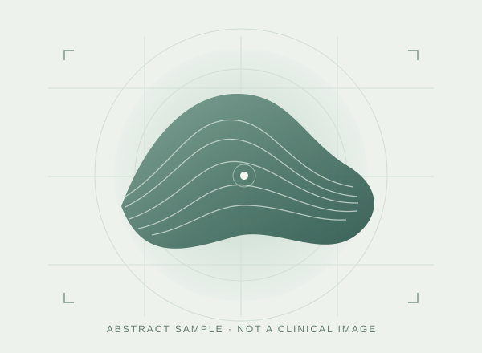

One image at a time
Select CFP or OCT, then bring an image into a quiet, focused workspace.
RETINAL IMAGING · LOCAL WORKSPACE
From CFP or OCT to an RVL assessment and a readable report. A focused local interface for retinal vascular leakage research.
Source available. Your own models. Your own workspace.

CFP / OCTIllustrative values · no model inference
BUILT AROUND THE REVIEW
Select CFP or OCT, then bring an image into a quiet, focused workspace.
Read the RVL Score and predicted probability alongside a distribution view.
Review a restrained, structured report. Print or save it as an A4 PDF.
EXPLORE THE INTERFACE
Use the abstract sample or preview your own image. All values are fixed examples; images stay in this browser.
Choose a sample or an image to see
the example results and report.
Illustrative result — not calculated from your image
Example classification Positive
Generated curves for this demo · no research or patient data
THE FULL WORKSPACE
Install the application to connect compatible model weights and reference data. The website is an interface demo; it does not include models or clinical datasets.